남티롤(Südtirol) 이야기 (3) - "훼손된 승리"
게시: 2026-06-04T06:30:11+09:00
지난 편에서 보셨듯이, WW1에서 이탈리아군이 보여준 실력은 매우 한심한 수준이었습니다. 도움이 되기는 커녕 영국군과 프랑스군이 이손초강 전선에 지원군을 보내줘야 하는 상황이 발생하기도 했지요. 그럼에도 불구하고, 적어도 종전 직후 영국과 프랑스는 이탈리아와 맺었던 런던 비밀 조약의 약속들을 다 들어줄 생각이었습니다. 어차피 남의 땅인데 알게 뭐냐 정도의 생각이었던 것입니다. 그런데 여기서 돌발변수가 나타납니다. 바로 미국 대통령 우드로 윌슨과 그가 제창한 민족 자결주의였습니다.
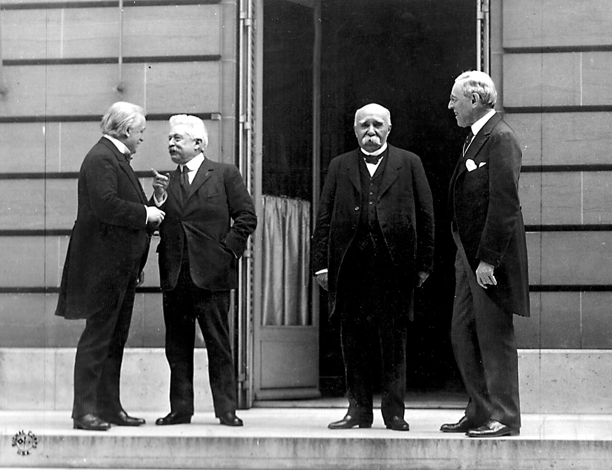
(1919년 5월 27일, 파리 평화 회담에서의 Big 4입니다. 왼쪽부터 영국 총리 David George, 이탈리아 총리 Vittorio Orlando, 프랑스 총리 Georges Clemenceau, 그리고 미국 대통령 Woodrow Wilson입니다.) 민족 자결주의는 겉으로만 보면 매우 좋은 사상입니다만, 물론 미국과 윌슨이 순수하게 좋은 의도로만 그를 주장한 것은 아니었습니다. 그 배경은 여러가지가 있습니다만, 가장 큰 것은 1917년 11월, 러시아에서 일어난 볼셰비키 혁명이었습니다. 공산주의자답게 레닌은 집권하자마자 "식민지와 피지배 민족은 즉각 독립해야 한다"며 반제국주의 세계 혁명을 선동하면서, 제정 러시아가 영국, 프랑스와 맺었던 추잡한 영토 분할 비밀 조약들을 전 세계에 폭로헸습니다. 국제사회에서 도덕적 주도권을 레닌에게 빼앗길 위기에 처하자, 윌슨은 급히 자본주의 틀 안에서도 민족 해방이 가능하다'는 것을 보여주어야 했고, 겸사겸사 나온 것이 바로 민족자결주의였습니다. 원래 모든 일에는 한 가지 이유만 있는 것은 아닙니다. 떠오르는 제조업 강국이자 제국주의 후발주자인 미국으로서는 영국과 프랑스 같은 유럽 열강들이 각자의 식민지로 구성한 폐쇄형 블록 경제(Block Economy)를 어떻게든 허물어야 했습니다. 민족 자결주의는 그를 위한 좋은 핑계이기도 했습니다. 물론 독일과 오스트리아-헝가리, 오스만 투르크 제국을 산산히 부숴버리기 위한 이론적 토대이기도 했습니다.
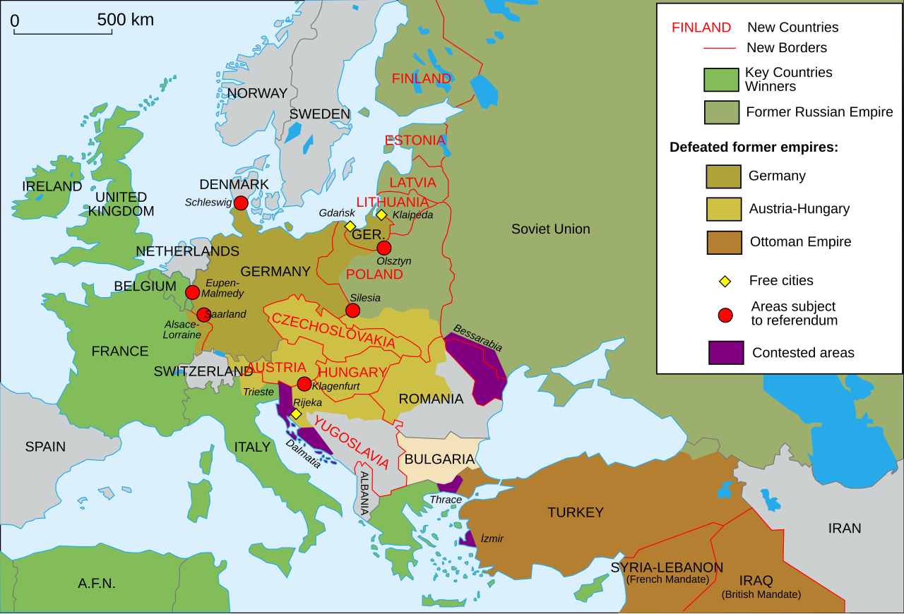
(윌슨의 민족 자결주의에 따라 확실히 패전국들은 저렇게 산산조각이 나서 많은 신생국들이 유럽에 생겨났습니다. 그러나 정작 영국과 프랑스, 일본과 미국이 장악한 아프리카와 아시아 식민지에는 변화가 없었습니다.) 그 배경이 무엇이든 윌슨의 민족 자결주의는 WW1 종전 이후 혼란한 세계에 나름 파문을 일으켰습니다. 우리나라에서도 3.1 만세운동이 일어날 정도였으니까요. 물론 현실은 비정했습니다. 그 민족 자결주의란 것은 어디까지나 패전국의 영토 및 식민지에만 적용되는 것이지 영국이나 프랑스, 그리고 (유럽에서는 아무도 거들떠보지 않았지만) 일본 같은 승전국에게는 적용되지 않는 것이었으니까요. 그 와중에 이탈리아의 입장은 좋은 것 같기도 하고 나쁜 것 같기도 한 애매한 것이었습니다. 일단 이탈리아인들이 주류를 이루고 있던 '미수복 이탈리아 영토'이자, 런던 비밀 조약을 통해 약속받았던 트렌티노 및 베네치아 줄리아 지방을 이탈리아로 귀속시키는 것에 대해서는 매우 유리한 사상이었으니까요. 게다가, 이탈리아의 야심을 더 부풀게 만들어 주는 것이기도 했습니다. 런던 조약에는 애초에 포함되어 있지 않았던 피우메(Fiume, 크로아티아어로는 리예카 Rijeka)에 대해서도 '거기도 인구의 절반 정도가 이탈리아인이니 피우메도 이탈리아 영토가 되어야 한다'라고 새롭게 주장할 수 있었던 것입니다.
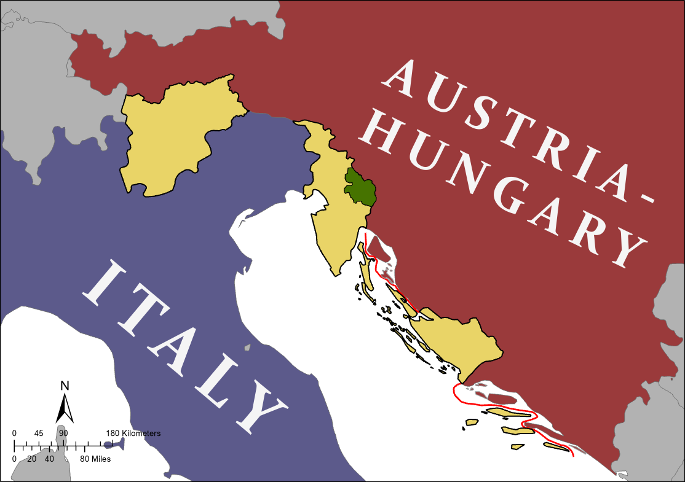
(이탈리아가 런던 비밀 조약에서 약속받았던 영토들이 노란 색으로 표시되어 있습니다. 윗 부분부터 남티롤과 트렌티노, 베네치아-줄리아, 그리고 달마시아 해안지대입니다. 그리고 초록색은 이탈리아가 새롭게 요구한 Monte Nevoso 지역입니다.)
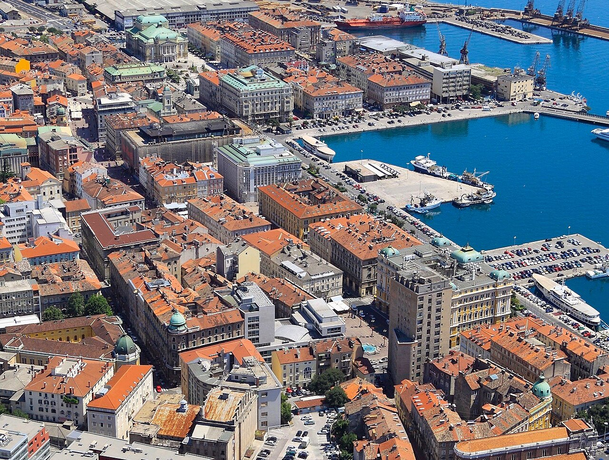
(당시 피우메(Fiume), 오늘날 크로아티아의 리예카(Rijeka) 중심부의 항공 사진입니다. 예쁘네요.) 하지만 그렇게 좋은 부분만 있는 것이 아니었습니다. 런던 조약에서 이탈리아가 요구한 것 중에는 남티롤과 달마시아 해안지대, 그리고 북아프리카의 식민지도 있었던 것입니다. 북아프리카 식민지는 일단 논외로 하고, 보젠(Bozen, 이탈리아어로는 볼차노 Bolzano)을 중심으로 하는 남티롤은 90% 이상의 주민들이 독일어를 사용하는 전통적인 오스트리아 영토였고, 달마시아 해안지대, 그러니까 오늘날 대부분 크로아티아 영토였던 곳은 대부분의 주민들이 크로아티아인들과 세르비아인들이었습니다. 그러나 이탈리아는 티롤의 한 가운데를 가로지르는 브렌너 고개길과 아드리아해 해안지대를 장악해야 이탈리아의 안보를 지킬 수 있다고 주장하며 이런 영토들을 요구했던 것입니다. 이건 결국 이탈리아가 독일계 및 슬라브계 주민들을 통치하겠다는 소리이므로 민족 자결주의와는 정면으로 대치되는 요구였습니다. 말도 많고 탈도 많았던 베르사이유 조약에서, 결국 이탈리아의 요구는 절반 정도만 충족되었습니다. 가장 핵심적인 요구 사항이었던 남티롤과 트리에스테 및 이스트리아(Istria) 반도를 포함한 베네치아 줄리아는 완전히 이탈리아 영토가 되었습니다. 그러나 달마시아 해안지대와 피우메 항구, 기타 오스만 투르크의 영토 및 북아프리카 식민지 확장 등의 요구는 거부된 것입니다. 이탈리아의 반응은 '가증스러운 영불놈들에게 속았다'라는 것이었습니다. 이탈리아는 WW1에서 약 60만의 목숨을 바쳤는데, 그 희생 치고는 너무나 빈약한 보상만 받았다는 분노는 '훼손된 승리'(vittoria mutilata)라는 용어로 이탈리아인들의 마음 속에 응어리로 남게 되었습니다. 그 응어리는 결국 무솔리니의 파시스트 정권의 탄생으로 이어지는 비극을 낳습니다.
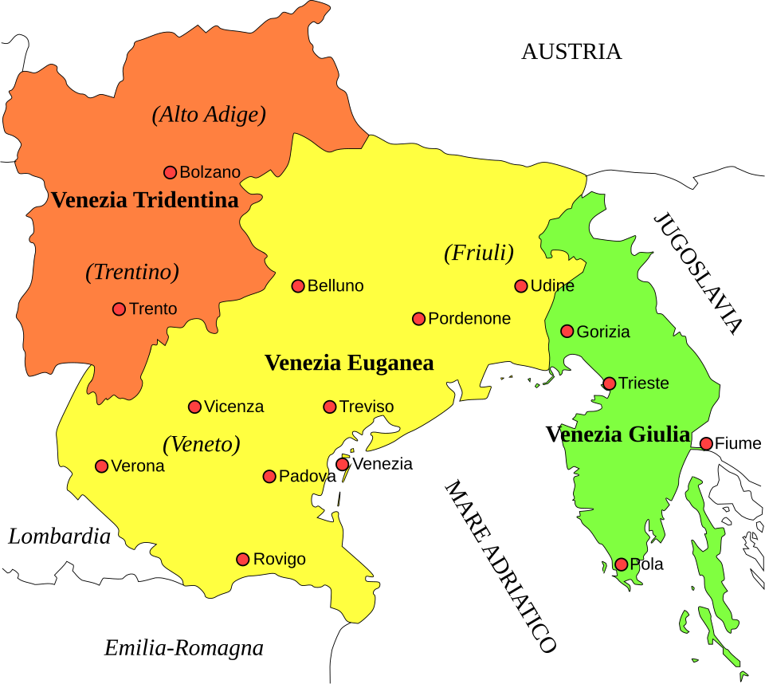
(이 지도에서 주황색으로 표시된 것이 트렌티노와 남티롤(알토-아디제), 그리고 초록색으로 표시된 것이 베네치아-줄리아로서, 이 지역들이 WW1에 참전한 대가로 이탈리아에게 주어진 것입니다.) WW1 자체도 비극이었지만 그 마무리는 희극에 가까울 정도로 어이없는 비극이었습니다. 가령 이탈리아가 자기 땅이 되어야 한다고 주장했던 피우메는 두고두고 문제를 일으켰습니다. 원래 오스트리아-헝가리 제국의 주요 항구이자 상당한 자치권을 가지고 있던 피우메에는 확실히 이탈리아계 주민들이 50%에 가까울 정도로 많기는 했습니다만, 거꾸로 이야기하면 절반 이상의 주민들이 슬라브계였습니다. WW1 이후 오스트리아 제국이 해체되는 과정에서 유고슬라비아 왕국이 탄생할 예정이었는데, 그러자 피우메의 크로아티아인들이 중심이 된 남슬라브 민족의회가 1918년 10월 말 재빨리 '피우메는 유고슬라비아의 일원'이라고 선언하고 헝가리인 총독이 도망친 뒤 비어 있던 총독 관저를 점령했습니다. 그러자 이탈리아계 주민들의 이탈리아 국가평의회는 바로 다음 날 '피우메는 이탈리아 왕국으로 자발적 합병된다'라고 맞불선언을 했습니다. 유고슬라비아와 이탈리아 사이에 무력 충돌 기운이 돌자, 미국, 영국, 프랑스, 이탈리아의 연합군이 이 도시를 임시 점령하고 '국제 연합군 관할령'이라는 어정쩡한 상태를 지속시켰습니다. 이런 상황에서 가브리엘레 단눈치오 (Gabriele D'Annunzio)라는 코미디언 같은 인물이 등장합니다. 그는 원래 명망 높은 이탈리아 문필가였고, 동시에 극단적인 민족주의자였였습니다. 50대였던 그는 WW1이 발발하자 군에 지원하여 전투기 조종사가 되었고, 실제로 폭격 임무를 수행하기도 했는데, 전쟁 말기이던 1918년 8월에는 Ansaldo SVA-9를 몰고 오스트리아의 수도 빈까지 왕복 1200km라는 기록적인 비행을 하여... 폭탄이 아닌 선전 삐라 5만 장을 뿌리는 희한한 행동을 한 사람이었습니다. (그 삐라의 문구는 자신이 직접 쓴 것이었는데, 읽어봐도 말하려는 바가 뭔지 잘 이해가 안 가는, 그냥 니들은 졌고 이탈리아 만세라는 내용의 오글거리는 문체의 글이었습니다.)
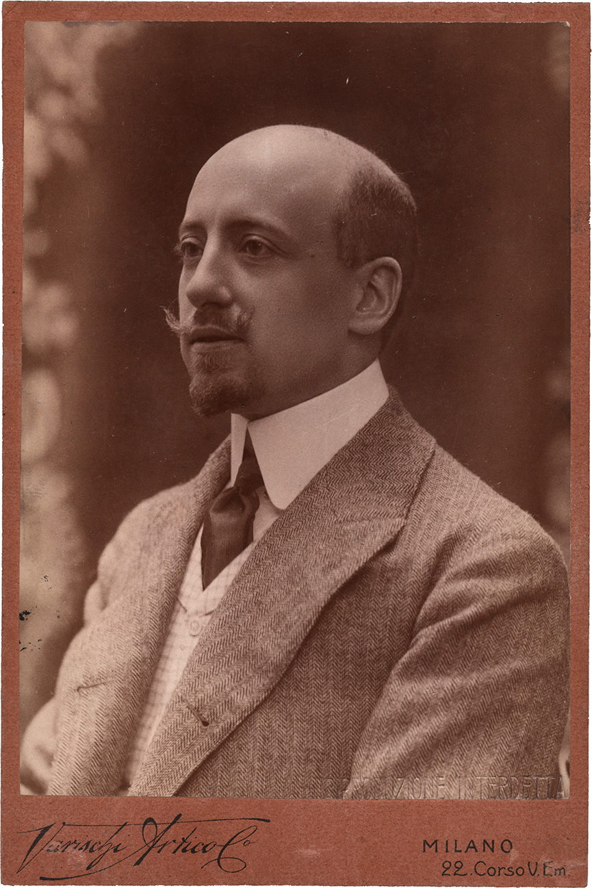
(원래는 그냥 이런 얌전한 아저씨였던 단눈치오)
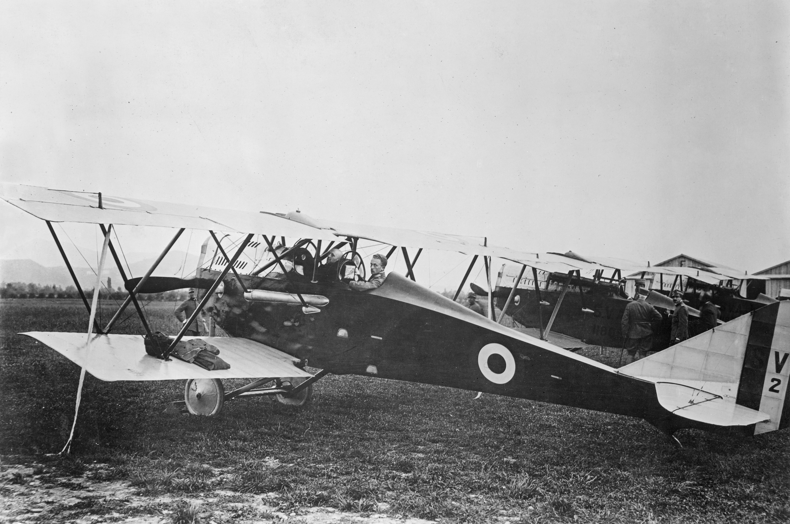
(정찰기 기종이던 Ansaldo SVA-9를 타고 빈으로 향하기 직전 촬영된 단눈치오의 모습입니다.)
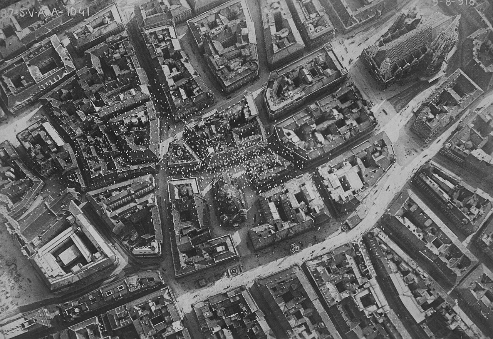
(단눈치오가 실제로 빈 상공에 삐라를 살포한 뒤 찍은 인증샷입니다. 사진 우상단에 성 슈테판 성당이 잘 보입니다.)
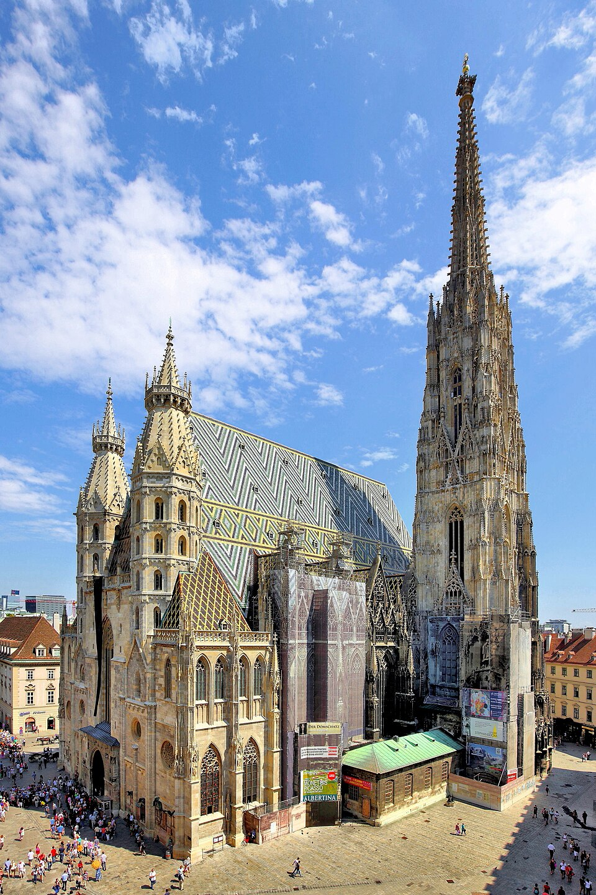
(빈의 대표적 랜드마크인 성 슈테판 성당입니다.) 문제는 이런 인물이 이탈리아에서는 영웅으로 떠받들여진다는 것이었습니다. 그는 피우메를 얻어내지 못한 이탈리아 정부에 대해 분노하며, 직접 피우메를 빼앗기로 합니다. 그는 1919년 2월, 탈영병과 참전용사, 극우 청년 등을 끌어모아 2,600 명 규모의 무장 의용군을 조직하고는 과거 로마 제국 군단병을 흉내내어 '레조나리'(Legionari)라고 이름 붙였습니다. 단눈치오는 이들을 이끌고 육로로 피우메를 침공했습니다. 당시 피우메를 점령하고 있던 연합군 부대들은 새빨간 고급 자동차를 탄 단눈치오가 선두에 선 너무나 뻔뻔스러운 행진에 기가 죽어 무력으로 저항하지 않고 그냥 철수해버렸습니다. 기세가 오른 단눈치오는 피우메를 이탈리아에 합병시킨다고 선언했고요.
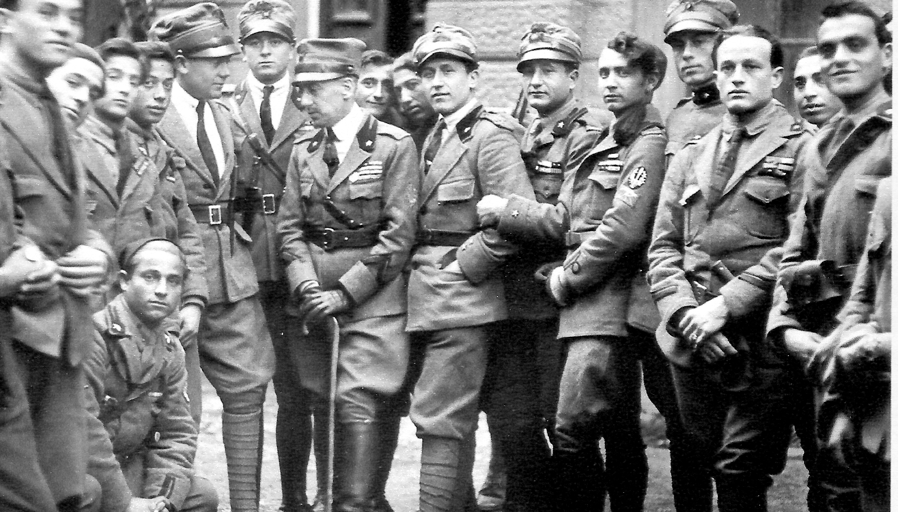
(1919년 피우메를 점령한 단눈치오와 그 추종자들입니다. 군복뿐만 아니라 표정과 포즈만 봐도 파시스트 냄새가 진동을 합니다.) 이런 희극에 난처해진 것은 이탈리아 정부도 마찬가지였습니다. 승전국들과의 국제 외교 조약을 정면으로 위반한 대형 사고였으니까요. 하지만 국내에서 단눈치오의 인기가 매우 좋았기에, 그를 무력으로 진압하는 것은 정치적으로 너무나 위험한 일이었습니다. 이탈리아 정부는 군대를 동원해 피우메를 포위하고 보급 차단으로 말려 죽이는 작전을 택했습니다. 단눈치오는 이렇게 되자 1920년 9월, 피우메를 기반으로 한 독자적인 주권 국가인 '카르나로 이탈리아 섭정단'이라는 괴상한 국가의 수립을 선포하고 스스로 두체(Il Duce), 즉 수령의 자리에 오르는 기행을 계속 했습니다. 그러나 두 달 뒤인 11월, 이탈리아 정부는 유고슬라비아 왕국과 조약을 맺고 피우메를 어디에도 속하지 않는 자유시로 독립시키기로 합의합니다. 그럼에도 단눈치오가 항복하지 않자, 결국 그 해 12월 24일, 이탈리아 해군 전함 안드레아 도리아(Andrea Doria)가 피우메 앞바다에 나타나 단눈치오의 사령부 건물을 향해 함포 사격을 가하며 시가전이 벌어졌습니다. 그렇게 양측에서 수십 명의 사상자가 나자, 단눈치오는 "이탈리아인이 이탈리아인을 죽이게 할 수 없다"며 12월 29일 항복을 선언하고 비로소 피우메를 떠났습니다.

(이탈리아 전함 안드레아 도리아(2만4천톤, 21노트)입니다. 이 모습은 1943년의 것인데, 1940년 11월의 타란토 습격작전에서는 다행히 아무 피해를 입지 않았습니다. 그 이야기는 https://nasica1.tistory.com/890 참조)
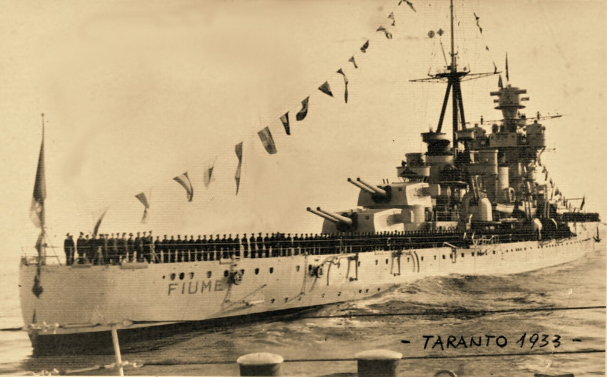
(결국 무솔리니의 이탈리아는 무력을 앞세운 협상을 통해 1924년 피우메를 병합했고, 이렇게 Zara급 중순양함 Fiume(1만4천톤, 33노트)까지 건조합니다. 이건 1933년의 모습입니다.) 그는 이후 가르다(Garda) 호숫가의 자기 집으로 은퇴하여 집필 활동을 이어갔는데, 피우메에서 그런 반역 행위를 저지르고도 아무런 처벌도 없었습니다. 오히려 1924년에는 국왕 비토리오 엠마누엘레 3세(Vittorio Emanuele III)로부터 몬테네보소 대공(Principe di Montenevoso)으로 작위를 받기도 했습니다. (왜 몬테네보소인지는 이 글 맨 위의 지도 참조...) 천만다행으로 그는 무솔리니의 파시스트 정권과는 직접적인 관련을 갖지 않았고 1938년 졸증으로 병사했지만, 두체라는 명칭부터 군중들에 대한 발코니 연설 등등 무솔리니는 단눈치오로부터 많은 것을 배워 따라했다고 합니다. 이렇게만 보면 WW1 이후 이탈리아의 북부 영토에 대한 혼란은 희극에 가까운 것처럼 보입니다. 그러나 이제 진짜 비극이 시작됩니다. 바로 독일계 주민들이 절대 다수였던 남티롤 이야기가 다음 주에 이어집니다.